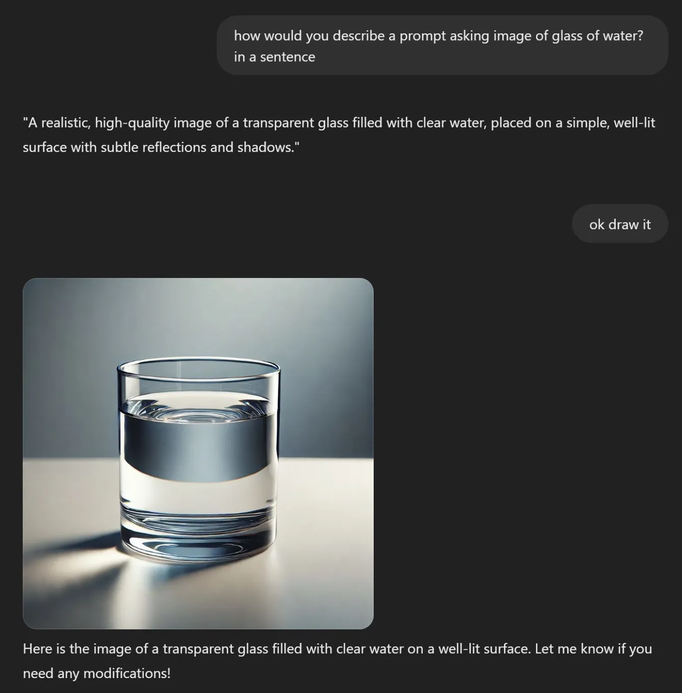

Let AI tell you how to prompt it
Originally posted on LinkedIn, February 18, 2025.
At a management workshop I attended, the facilitators ran an interesting experiment. They sent one person out of the room and told the rest of us to stand up only if he said a specific sentence: “Drink a glass of water.”
When he returned, he tried everything he could think of to make us stand. He asked, begged, argued, made jokes, and gave orders. Nothing worked.
After quite a few frustrating attempts, he stopped and asked, “What would make you stand up?” Once he knew the answer, he succeeded.
I apply the same lesson in my conversations with AI. Instead of telling the model what to do, I ask how it would do it. How would it write what I want to write? How would it fix the bug I am trying to crack?
It reminds me of the famous Steve Jobs quote: “It doesn't make sense to hire smart people and tell them what to do; we hire smart people so they can tell us what to do.”
The same applies to AI. Sometimes you need to ask the right question to discover that the solution was there all along. It knows how to manage itself better than we do.
It is also a good opportunity to get up from the screen and drink a glass of water.
